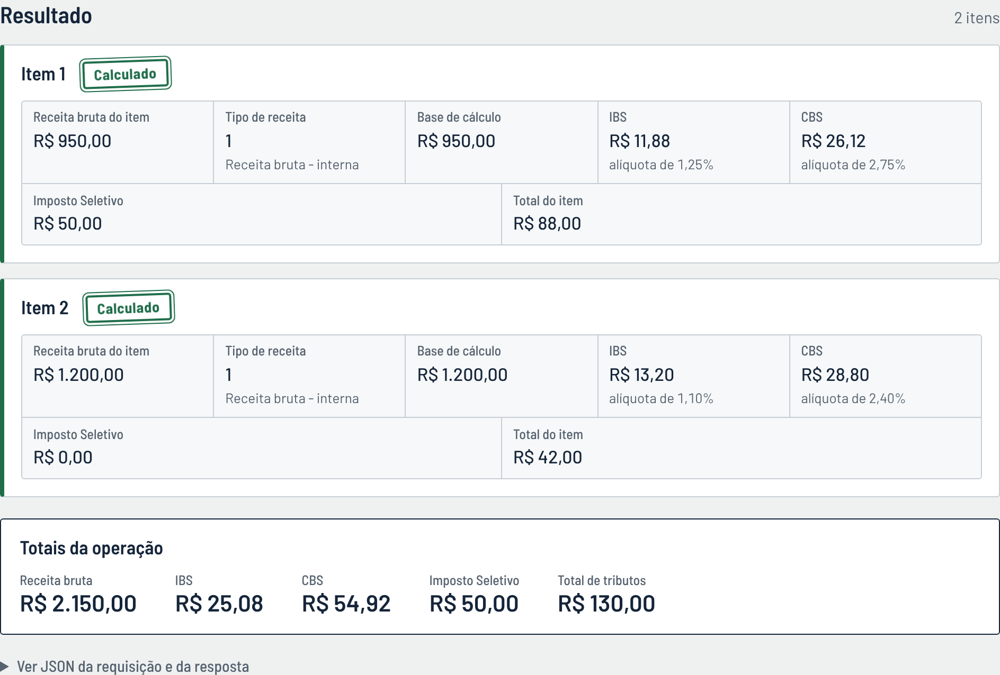
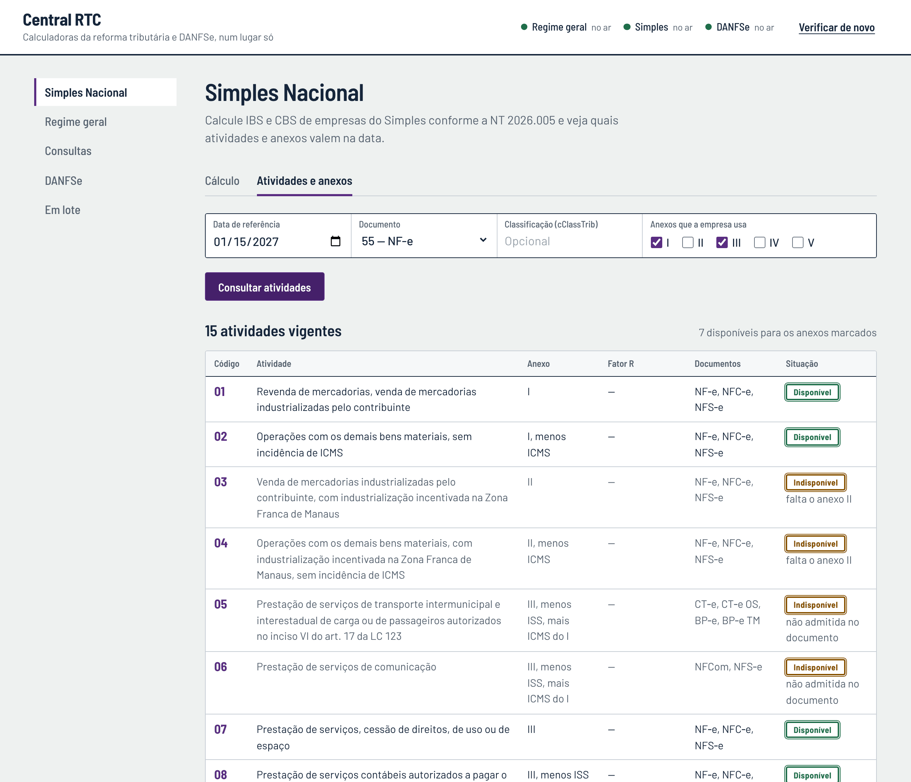

As calculadoras da reforma tributária num painel só
CBS, IBS e Imposto Seletivo do regime geral e do Simples Nacional, mais o gerador de DANFSe, usando os serviços oficiais da Receita Federal no seu computador. Um item por vez ou uma planilha inteira.


O que você faz com ela
Cada parte conversa com um serviço oficial. A Central RTC monta as requisições, chama a calculadora certa e organiza a resposta. Nenhum valor é recalculado por fora.
Conforme a NT 2026.005, com o estado de cada item e os códigos de erro explicados.
As 15 atividades vigentes, marcadas como disponíveis ou não para os anexos e o documento da empresa.
Reduções, alíquotas efetivas e Imposto Seletivo. Depois, o XML do grupo de tributação validado no XSD.
cClassTrib, NCM, NBS, alíquotas de referência e descrição dos códigos de erro.
Arraste as NFS-e autorizadas, escolha a situação e baixe tudo num .zip.
Centenas de itens por CSV, com o resultado pronto para o Excel e as respostas completas em JSON.
Como é por dentro
As capturas abaixo foram feitas com o simulador de desenvolvimento do projeto, então os valores são fictícios.
Regime geral
Cada item mostra base, CBS, IBS estadual e municipal, com a redução aplicada e a alíquota efetiva. A memória de cálculo fica a um clique.
A partir de 2027 as alíquotas nominais passam a ser obrigatórias, e o painel mostra ou esconde esses campos conforme a data.

Atividades do Simples
Marque os anexos que a empresa usa e o documento da nota. A tabela aponta o que está disponível e explica por que o resto não está.

DANFSe em lote
Os XMLs com problema são marcados com o motivo, sem travar os outros. Os PDFs prontos podem ser vistos, baixados um a um ou juntos.

Planilha
Antes de processar, o painel aponta linhas com colunas faltando ou dados diferentes dentro da mesma nota. No fim, cada item volta com a linha de origem.

Instalar
Você precisa do Docker Desktop (Windows e macOS) ou do Docker com Compose (Linux). Ele baixa o código oficial da Receita, compila e gera o banco de dados.
-
Baixe o projeto.
git clone https://github.com/PedrosHttps/central-rtc.git cd central-rtc
-
Suba os quatro contêineres. A primeira vez leva alguns minutos.
docker compose up -d --build
-
Abra
http://localhost:3000. As bolinhas no topo ficam verdes quando cada serviço responde.
Automatize pela linha de comando
O mesmo motor do painel roda sem navegador. Dá para agendar no cron ou no Agendador de Tarefas do Windows.
# os três serviços estão no ar? node cli.js status # uma planilha de itens do Simples vira planilha de resultados node cli.js lote simples notas-novembro.csv # uma pasta de NFS-e vira uma pasta de PDFs node cli.js danfse ./xmls -o ./pdfs
Sai com código 0 quando tudo deu certo, 1 quando um serviço está fora e 2 quando algum item ou nota falhou.
Como as peças se conectam
O painel e a linha de comando falam com três serviços independentes, cada um vindo do repositório oficial da Receita Federal.
Node.js, sem dependências
Antes de usar
Não é um produto da Receita
É um projeto independente que usa os serviços de código aberto publicados por ela.
Confira os resultados
As regras da reforma ainda mudam. Atualize os serviços com frequência e revise os valores antes de emitir documentos.
DANFSe só de nota autorizada
O DANFSe é o documento auxiliar de uma NFS-e já emitida. Use os XMLs que o emissor devolveu.